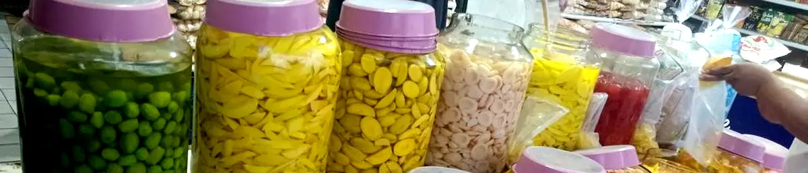

Manis yang Bikin Awet: Menguak Rahasia Jajanan Tradisional Tahan Lama
Dipublikasikan pada 23 September 2025

Permen dan manisan adalah camilan favorit yang disukai banyak orang. Rasanya yang manis dan menyenangkan cocok dinikmati kapan saja. Saat ini, aneka jajanan manis modern mudah ditemukan di berbagai platform jual beli.
Namun, tahukah Anda, jika jajanan modern sering menggunakan bahan pengawet tambahan, beberapa jajanan tradisional justru mengandalkan bahan alami? Jajanan tradisional yang membangkitkan kenangan masa kecil ini masih mudah kita temui.
Dua contohnya adalah permen asam jawa dan permen tape (suwar-suwir). Keduanya dibuat dengan mencampurkan bahan utama dengan gula dalam jumlah banyak, kadang ditambah sedikit tepung untuk memperkuat tekstur. Lalu, apa rahasia yang membuat jajanan ini tetap awet meski disimpan di suhu ruang?
Gula: Pengawet Alami yang Ampuh
Kunci daya tahan jajanan manis tradisional terletak pada penggunaan gula dalam jumlah tinggi. Kehadiran gula memicu proses osmosis, yaitu penyerapan cairan dari bakteri atau mikroorganisme. Proses ini mirip dengan pengasinan makanan. Ketika osmosis terjadi, bakteri kehilangan cairan hingga akhirnya mati, sehingga tidak bisa merusak makanan.
Berkat proses alami ini, jajanan seperti permen asam jawa dan suwar-suwir bisa bertahan lama tanpa bantuan bahan pengawet buatan. Ketahanannya bahkan membuat jajanan ini aman dikirim lintas kota tanpa risiko cepat basi.
Bukan Sekadar Manis di Lidah
Ternyata, rasa manis dari jajanan ini tidak hanya memanjakan lidah, tetapi juga berperan penting sebagai pengawet alami. Mengetahui hal ini membuat kita semakin menghargai kearifan lokal di balik pembuatan jajanan tradisional.
Selain nikmat dan bikin nostalgia, jajanan manis tradisional juga menyimpan cerita tentang bagaimana gula digunakan untuk mengawetkan makanan secara alami. Ini adalah bukti bahwa leluhur kita sudah memahami ilmu pengolahan pangan sejak dulu.
Jika penasaran, Anda bisa menonton video singkat di bawah ini yang menjelaskan bagaimana gula membantu memperpanjang umur simpan makanan. Siapa tahu, setelah ini Anda jadi makin cinta dengan jajanan tradisional!